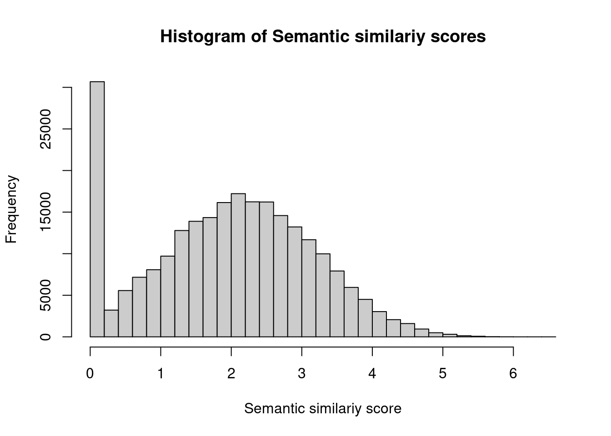

source(snakemake@input$config)
#source("src/config.R")
# READ ANNOTATION
# sa <- fread('/s/project/mitoMultiOmics/multiOMICs_integration/raw_data/proteomics_annotation.tsv')
sa <- fread(snakemake@input$sa)
sa <- sa[USE_FOR_PROTEOMICS_PAPER == T]
# load HPO ontology
# data(hpo)
hpo <- get_ontology("http://purl.obolibrary.org/obo/hp.obo", extract_tags="everything")
# Load patient's HPO
pat_hpo <- fread(snakemake@input$patient_hpo)
# pat_hpo <- fread('/s/project/mitoMultiOmics/multiOMICs_integration/raw_data/Patient_HPO_phenotypes.tsv')
pat_hpo <- pat_hpo[, c("SAMPLE_ID", "HPO_ID")]
# renmove duplicates from HPOs per patient
pat_hpo <-pat_hpo[!duplicated(pat_hpo ),]
pat_hpo <-pat_hpo[HPO_ID %in% unique(hpo$id)]
hpo_gene <- fread("http://compbio.charite.de/jenkins/job/hpo.annotations/lastSuccessfulBuild/artifact/util/annotation/phenotype_to_genes.txt")
colnames(hpo_gene) <- c("HPO_ID", "HPO_name", "entrezID", "geneID", "Additional_Info", "source", "disease-ID")
hpo_gene <- hpo_gene[, c("geneID", "HPO_ID")]
hpo_gene <- hpo_gene[!duplicated(hpo_gene)]
hpo_gene <-hpo_gene[HPO_ID %in% unique(hpo$id)]
# Fix gene names
hpo_gene[geneID == "YARS1", geneID := "YARS" ]
hpo_gene[geneID == "MICOS13", geneID := "C19ORF70" ]
hpo_gene[geneID == "ADPRS", geneID := "ADPRHL2" ]
# Add known genotype - phenotype associations
hpo_gene <- rbind(hpo_gene, data.table( geneID = "DNAJC30", HPO_ID = c("HP:0002076", "HP:0000648", "HP:0000505", "HP:0011462", "HP:0001112", "HP:0003581", "HP:0001263", "HP:0001332", "HP:0001251", "HP:0002134", "HP:0011923", "HP:0011463" ) ) )
hpo_gene <- rbind(hpo_gene, data.table( geneID = "MRPS25", HPO_ID = c("HP:0003581", "HP:0011445", "HP:0001274", "HP:0002421", "HP:0001266", "HP:0002509", "HP:0001348", "HP:0001274", "HP:0007333", "HP:0001324",
"HP:0001385", "HP:0000846", "HP:0004322", "HP:0000252", "HP:0011924", "HP:0008347", "HP:0001270", "HP:0003676", "HP:0012378", "HP:0002015") ) )
hpo_gene <- rbind(hpo_gene, data.table( geneID = "TXNIP", HPO_ID = c("HP:0004902", "HP:0001943", "HP:0003355", "HP:0006568", "HP:0003658", "HP:0004322", "HP:0001508","HP:0001252", "HP:0011968") ) )
hpo_gene <- rbind(hpo_gene, data.table( geneID = "YARS", HPO_ID = c("HP:0001510", "HP:0001263", "HP:0007305", "HP:0000407", "HP:0000639", "HP:0002611", "HP:0001738", "HP:0001943", "HP:0001903", "HP:0000093", "HP:0100806", "HP:0006528") ) )
hpo_gene <- hpo_gene[!duplicated(hpo_gene)]
sa <- sa[SAMPLE_ID %in% unique(pat_hpo$SAMPLE_ID) ]
# extract ancestors
hp_ancestors <- hpo$ancestors
# create HPO named list of genes
info <- unstack(hpo_gene, geneID~HPO_ID)
hpByGene <- unstack(hpo_gene, HPO_ID~geneID)
# information content
ic <- descendants_IC(hpo)
## Compute semantic similarity between HP of interest and all HP terms
## This step is time consumming and can be parallelized.
SSscores <- data.frame()
for (patient in unique(sa$SAMPLE_ID)){
hpOfInterest <- pat_hpo[SAMPLE_ID == patient]$HPO_ID
hpGeneResnik <- compareHPSets(
hpSet1=names(ic), hpSet2=hpOfInterest,
IC=ic,
ancestors=hp_ancestors,
method="Resnik",
#BPPARAM= MulticoreParam(40)
BPPARAM= MulticoreParam(snakemake@threads)
)
## Group the results by gene
hpMatByGene <- lapply(
hpByGene,
function(x){
hpGeneResnik[x, , drop=FALSE]
}
)
## Compute the corresponding scores
Semantic_sim <- unlist(lapply(
hpMatByGene,
hpSetCompSummary,
method="bma", direction="symSim"
))
res <- as.data.frame(Semantic_sim)
res$geneID <- rownames(res)
res$SAMPLE_ID <- rep( patient, nrow(res))
res <- as.data.table(res[, c("SAMPLE_ID", "geneID", "Semantic_sim" )])
res <- res[order(Semantic_sim, decreasing = T)]
res$Rank_SSs <- seq(1, nrow(res))
SSscores <- rbind(SSscores, res)
}
hist(SSscores$Semantic_sim, xlab = "Semantic similariy score",
main = "Histogram of Semantic similariy scores", col = "gray80", breaks = 30)

#write_tsv(SSscores, '/s/project/mitoMultiOmics/multiOMICs_integration/processed_data/HPO/Patient_Gene_semantic_similariy.tsv')
write_tsv(SSscores, snakemake@output$semantic_similariy)
IyctLS0KIycgdGl0bGU6IEdlbmUgc2VtYW50aWMgc2ltaWxhcml0eQojJyBhdXRob3I6IHNtaXJub3ZkCiMnIHdiOgojJyAgaW5wdXQ6CiMnICAtIGNvbmZpZzogJ3NyYy9jb25maWcuUicKIycgIC0gc2E6ICdgc20gY29uZmlnWyJBTk5PVEFUSU9OIl1gJwojJyAgLSBwYXRpZW50X2hwbzogJ2BzbSBjb25maWdbIlJBV19IUE8iXWAnCiMnICBvdXRwdXQ6CiMnICAtIHNlbWFudGljX3NpbWlsYXJpeTogJ2BzbSBjb25maWdbIlBST0NfREFUQSJdICsgIi9IUE8vUGF0aWVudF9HZW5lX3NlbWFudGljX3NpbWlsYXJpeS50c3YiYCcKIycgIHRocmVhZHM6IDQwCiMnIG91dHB1dDoKIycgICBodG1sX2RvY3VtZW50OgojJyAgICBjb2RlX2ZvbGRpbmc6IGhpZGUKIycgICAgY29kZV9kb3dubG9hZDogVFJVRQojJy0tLQoKCnNvdXJjZShzbmFrZW1ha2VAaW5wdXQkY29uZmlnKQojc291cmNlKCJzcmMvY29uZmlnLlIiKQoKCiMgUkVBRCBBTk5PVEFUSU9OCiMgc2EgPC0gZnJlYWQoJy9zL3Byb2plY3QvbWl0b011bHRpT21pY3MvbXVsdGlPTUlDc19pbnRlZ3JhdGlvbi9yYXdfZGF0YS9wcm90ZW9taWNzX2Fubm90YXRpb24udHN2JykKc2EgPC0gZnJlYWQoc25ha2VtYWtlQGlucHV0JHNhKQpzYSA8LSBzYVtVU0VfRk9SX1BST1RFT01JQ1NfUEFQRVIgPT0gVF0KCgojIGxvYWQgSFBPIG9udG9sb2d5CiMgZGF0YShocG8pIApocG8gPC0gZ2V0X29udG9sb2d5KCJodHRwOi8vcHVybC5vYm9saWJyYXJ5Lm9yZy9vYm8vaHAub2JvIiwgZXh0cmFjdF90YWdzPSJldmVyeXRoaW5nIikKCgojIExvYWQgcGF0aWVudCdzIEhQTyAKcGF0X2hwbyA8LSBmcmVhZChzbmFrZW1ha2VAaW5wdXQkcGF0aWVudF9ocG8pCiMgcGF0X2hwbyA8LSBmcmVhZCgnL3MvcHJvamVjdC9taXRvTXVsdGlPbWljcy9tdWx0aU9NSUNzX2ludGVncmF0aW9uL3Jhd19kYXRhL1BhdGllbnRfSFBPX3BoZW5vdHlwZXMudHN2JykKCgpwYXRfaHBvIDwtIHBhdF9ocG9bLCBjKCJTQU1QTEVfSUQiLCAiSFBPX0lEIildCiMgcmVubW92ZSBkdXBsaWNhdGVzIGZyb20gSFBPcyBwZXIgcGF0aWVudCAKcGF0X2hwbyA8LXBhdF9ocG9bIWR1cGxpY2F0ZWQocGF0X2hwbyApLF0KcGF0X2hwbyA8LXBhdF9ocG9bSFBPX0lEICVpbiUgIHVuaXF1ZShocG8kaWQpXQoKCmhwb19nZW5lIDwtIGZyZWFkKCJodHRwOi8vY29tcGJpby5jaGFyaXRlLmRlL2plbmtpbnMvam9iL2hwby5hbm5vdGF0aW9ucy9sYXN0U3VjY2Vzc2Z1bEJ1aWxkL2FydGlmYWN0L3V0aWwvYW5ub3RhdGlvbi9waGVub3R5cGVfdG9fZ2VuZXMudHh0IikKY29sbmFtZXMoaHBvX2dlbmUpIDwtIGMoIkhQT19JRCIsICJIUE9fbmFtZSIsICJlbnRyZXpJRCIsICJnZW5lSUQiLCAiQWRkaXRpb25hbF9JbmZvIiwgICJzb3VyY2UiLCAiZGlzZWFzZS1JRCIpCmhwb19nZW5lIDwtIGhwb19nZW5lWywgYygiZ2VuZUlEIiwgIkhQT19JRCIpXQpocG9fZ2VuZSA8LSBocG9fZ2VuZVshZHVwbGljYXRlZChocG9fZ2VuZSldCmhwb19nZW5lIDwtaHBvX2dlbmVbSFBPX0lEICVpbiUgIHVuaXF1ZShocG8kaWQpXQoKCiMgRml4IGdlbmUgbmFtZXMKaHBvX2dlbmVbZ2VuZUlEID09ICJZQVJTMSIsIGdlbmVJRCA6PSAiWUFSUyIgXQpocG9fZ2VuZVtnZW5lSUQgPT0gIk1JQ09TMTMiLCBnZW5lSUQgOj0gIkMxOU9SRjcwIiBdCmhwb19nZW5lW2dlbmVJRCA9PSAiQURQUlMiLCBnZW5lSUQgOj0gIkFEUFJITDIiIF0KCgojIEFkZCBrbm93biBnZW5vdHlwZSAtIHBoZW5vdHlwZSBhc3NvY2lhdGlvbnMgCmhwb19nZW5lIDwtIHJiaW5kKGhwb19nZW5lLCBkYXRhLnRhYmxlKCBnZW5lSUQgPSAiRE5BSkMzMCIsIEhQT19JRCA9IGMoIkhQOjAwMDIwNzYiLCAiSFA6MDAwMDY0OCIsICJIUDowMDAwNTA1IiwgIkhQOjAwMTE0NjIiLCAiSFA6MDAwMTExMiIsICJIUDowMDAzNTgxIiwgIkhQOjAwMDEyNjMiLCAiSFA6MDAwMTMzMiIsICJIUDowMDAxMjUxIiwgIkhQOjAwMDIxMzQiLCAiSFA6MDAxMTkyMyIsICJIUDowMDExNDYzIiAgKSAgKSApCmhwb19nZW5lIDwtIHJiaW5kKGhwb19nZW5lLCBkYXRhLnRhYmxlKCBnZW5lSUQgPSAiTVJQUzI1IiwgSFBPX0lEID0gYygiSFA6MDAwMzU4MSIsICJIUDowMDExNDQ1IiwgIkhQOjAwMDEyNzQiLCAiSFA6MDAwMjQyMSIsICJIUDowMDAxMjY2IiwgIkhQOjAwMDI1MDkiLCAiSFA6MDAwMTM0OCIsICJIUDowMDAxMjc0IiwgIkhQOjAwMDczMzMiLCAiSFA6MDAwMTMyNCIsIAogICAgICAgICAgICAgICAgICAgICAgICAgICAgICAgICAgICAgICAgICAgICAgICAgICAgICAgICAgICAgICAgICAgICAgIkhQOjAwMDEzODUiLCAiSFA6MDAwMDg0NiIsICJIUDowMDA0MzIyIiwgIkhQOjAwMDAyNTIiLCAiSFA6MDAxMTkyNCIsICJIUDowMDA4MzQ3IiwgIkhQOjAwMDEyNzAiLCAiSFA6MDAwMzY3NiIsICJIUDowMDEyMzc4IiwgIkhQOjAwMDIwMTUiKSAgKSApIApocG9fZ2VuZSA8LSByYmluZChocG9fZ2VuZSwgZGF0YS50YWJsZSggZ2VuZUlEID0gIlRYTklQIiwgSFBPX0lEID0gYygiSFA6MDAwNDkwMiIsICJIUDowMDAxOTQzIiwgIkhQOjAwMDMzNTUiLCAiSFA6MDAwNjU2OCIsICJIUDowMDAzNjU4IiwgIkhQOjAwMDQzMjIiLCAiSFA6MDAwMTUwOCIsIkhQOjAwMDEyNTIiLCAiSFA6MDAxMTk2OCIpICApICkKaHBvX2dlbmUgPC0gcmJpbmQoaHBvX2dlbmUsIGRhdGEudGFibGUoIGdlbmVJRCA9ICJZQVJTIiwgSFBPX0lEID0gYygiSFA6MDAwMTUxMCIsICJIUDowMDAxMjYzIiwgIkhQOjAwMDczMDUiLCAiSFA6MDAwMDQwNyIsICJIUDowMDAwNjM5IiwgIkhQOjAwMDI2MTEiLCAiSFA6MDAwMTczOCIsICJIUDowMDAxOTQzIiwgIkhQOjAwMDE5MDMiLCAiSFA6MDAwMDA5MyIsICJIUDowMTAwODA2IiwgIkhQOjAwMDY1MjgiKSAgKSApCgpocG9fZ2VuZSA8LSBocG9fZ2VuZVshZHVwbGljYXRlZChocG9fZ2VuZSldCnNhIDwtIHNhW1NBTVBMRV9JRCAlaW4lIHVuaXF1ZShwYXRfaHBvJFNBTVBMRV9JRCkgXQoKIyBleHRyYWN0IGFuY2VzdG9ycwpocF9hbmNlc3RvcnMgPC0gaHBvJGFuY2VzdG9ycwojIGNyZWF0ZSBIUE8gbmFtZWQgbGlzdCBvZiBnZW5lcwppbmZvIDwtIHVuc3RhY2soaHBvX2dlbmUsIGdlbmVJRH5IUE9fSUQpCmhwQnlHZW5lIDwtIHVuc3RhY2soaHBvX2dlbmUsIEhQT19JRH5nZW5lSUQpCgojIGluZm9ybWF0aW9uIGNvbnRlbnQKaWMgPC0gZGVzY2VuZGFudHNfSUMoaHBvKQoKCiMjIENvbXB1dGUgc2VtYW50aWMgc2ltaWxhcml0eSBiZXR3ZWVuIEhQIG9mIGludGVyZXN0IGFuZCBhbGwgSFAgdGVybXMKIyMgVGhpcyBzdGVwIGlzIHRpbWUgY29uc3VtbWluZyBhbmQgY2FuIGJlIHBhcmFsbGVsaXplZC4KU1NzY29yZXMgPC0gZGF0YS5mcmFtZSgpCmZvciAocGF0aWVudCBpbiB1bmlxdWUoc2EkU0FNUExFX0lEKSl7CiAgaHBPZkludGVyZXN0IDwtIHBhdF9ocG9bU0FNUExFX0lEID09IHBhdGllbnRdJEhQT19JRAogIAogIGhwR2VuZVJlc25payA8LSBjb21wYXJlSFBTZXRzKAogICAgaHBTZXQxPW5hbWVzKGljKSwgaHBTZXQyPWhwT2ZJbnRlcmVzdCwKICAgIElDPWljLAogICAgYW5jZXN0b3JzPWhwX2FuY2VzdG9ycywKICAgIG1ldGhvZD0iUmVzbmlrIiwKICAgICNCUFBBUkFNPSBNdWx0aWNvcmVQYXJhbSg0MCkKICAgIEJQUEFSQU09IE11bHRpY29yZVBhcmFtKHNuYWtlbWFrZUB0aHJlYWRzKQogICkKICAKICAjIyBHcm91cCB0aGUgcmVzdWx0cyBieSBnZW5lCiAgaHBNYXRCeUdlbmUgPC0gbGFwcGx5KAogICAgaHBCeUdlbmUsCiAgICBmdW5jdGlvbih4KXsKICAgICAgaHBHZW5lUmVzbmlrW3gsICwgZHJvcD1GQUxTRV0KICAgIH0KICApCiAgCiAgIyMgQ29tcHV0ZSB0aGUgY29ycmVzcG9uZGluZyBzY29yZXMKICBTZW1hbnRpY19zaW0gPC0gdW5saXN0KGxhcHBseSgKICAgIGhwTWF0QnlHZW5lLAogICAgaHBTZXRDb21wU3VtbWFyeSwKICAgIG1ldGhvZD0iYm1hIiwgZGlyZWN0aW9uPSJzeW1TaW0iCiAgKSkKICAKICByZXMgPC0gYXMuZGF0YS5mcmFtZShTZW1hbnRpY19zaW0pCiAgcmVzJGdlbmVJRCA8LSByb3duYW1lcyhyZXMpIAogIHJlcyRTQU1QTEVfSUQgPC0gcmVwKCAgcGF0aWVudCwgbnJvdyhyZXMpKQogIHJlcyA8LSBhcy5kYXRhLnRhYmxlKHJlc1ssIGMoIlNBTVBMRV9JRCIsICJnZW5lSUQiLCAiU2VtYW50aWNfc2ltIiApXSkKICByZXMgPC0gcmVzW29yZGVyKFNlbWFudGljX3NpbSwgZGVjcmVhc2luZyA9IFQpXQogIHJlcyRSYW5rX1NTcyA8LSBzZXEoMSwgbnJvdyhyZXMpKQogIFNTc2NvcmVzIDwtIHJiaW5kKFNTc2NvcmVzLCByZXMpCn0KCmhpc3QoU1NzY29yZXMkU2VtYW50aWNfc2ltLCB4bGFiID0gIlNlbWFudGljIHNpbWlsYXJpeSBzY29yZSIsICAgCiAgICAgIG1haW4gPSAiSGlzdG9ncmFtIG9mIFNlbWFudGljIHNpbWlsYXJpeSBzY29yZXMiLCBjb2wgPSAiZ3JheTgwIiwgYnJlYWtzID0gMzApCgojd3JpdGVfdHN2KFNTc2NvcmVzLCAgJy9zL3Byb2plY3QvbWl0b011bHRpT21pY3MvbXVsdGlPTUlDc19pbnRlZ3JhdGlvbi9wcm9jZXNzZWRfZGF0YS9IUE8vUGF0aWVudF9HZW5lX3NlbWFudGljX3NpbWlsYXJpeS50c3YnKQp3cml0ZV90c3YoU1NzY29yZXMsICBzbmFrZW1ha2VAb3V0cHV0JHNlbWFudGljX3NpbWlsYXJpeSkKCg==